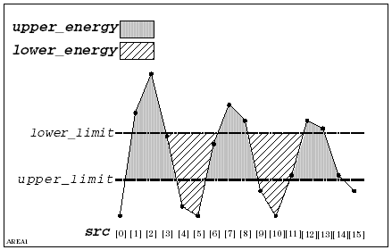
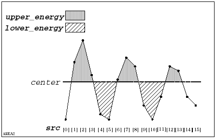

DSP_AREA
This API computes the area of the specified domain.
The following figures show the lower and upper energies:


If an element of src is equal to a reference level, the area for the element is not computed.
This API is defined in the header file /opt/hp93000/soc/prod_com/include/MAPI/libdsp.h.
Syntax
DSP_AREA(ARRAY_D& src, DOUBLE *lower,
DOUBLE *upper,
INT start, INT stop, INT mode,
DOUBLE lower_limit,
DOUBLE upper_limit, DOUBLE center);
DSP_AREA(DOUBLE *src, DOUBLE *lower,
DOUBLE *upper,
INT start, INT stop, INT mode,
DOUBLE lower_limit,
DOUBLE upper_limit, DOUBLE center);I/O |
Parameter |
Description / Range |
|---|---|---|
I |
src |
Source array |
O |
lower |
Calculated energy that is below the reference level specified by center or lower_limit |
O |
upper |
Calculated energy that is above the reference level specified by center or upper_limit |
I |
start |
Subscript at which the process starts 0 ≤ start ≤ 2097152 - 1 start ≤ (size of src) - 1 |
I |
stop |
Subscript at which the process stops 0 ≤ stop ≤ 2097152 - 1 stop ≤ (size of src) - 1 stop ≥ start |
I |
mode |
Reference level mode used for calculating energy CENTER: The system uses the reference level specified by center to calculate the energy JUT: The system uses the reference levels specified by lower_limit and upper_limit to calculate the energy |
I |
lower_limit |
Lower reference level If mode is JUT, you must set this parameter If mode is CENTER, this parameter is ignored |
I |
upper_limit |
Upper reference level If mode is JUT, you must set this parameter If mode is CENTER, this parameter is ignored |
I |
center |
Reference level If mode is CENTER, you must set this parameter If mode is JUT, this parameter is ignored |
Example
ARRAY_D analog_out;
DOUBLE *energy_l, *energy_h;
:
:
DSP_AREA(analog_out, energy_l, energy_h, 100,
4090, CENTER, 0.0, 0.0, 5.55);DSP_AREA returns lower and upper energy to energy_l and energy_h . Because the mode is CENTER, lower_limit and upper_limit are ignored.